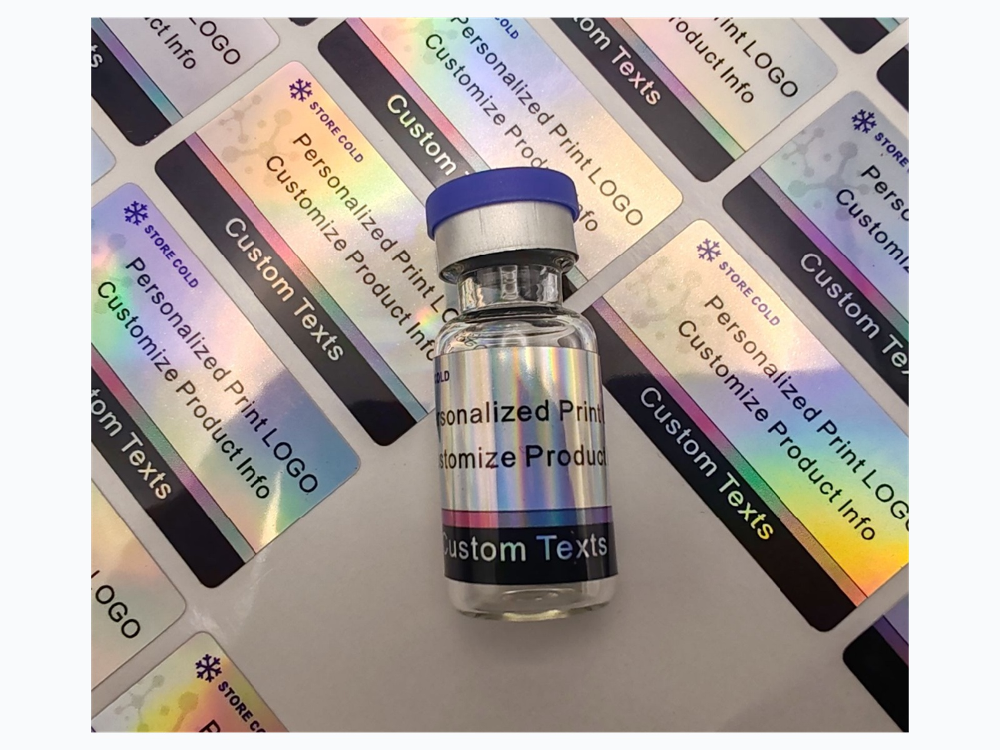
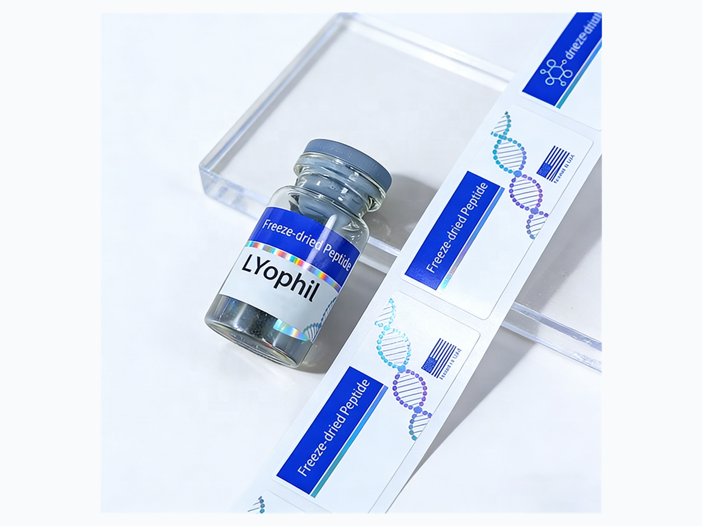

When people discuss small research bottles online, the complaints are rarely about fancy decoration. They are practical: similar vials are easy to mix up, handwritten labels can be hard to read, adhesive can fail around cold or damp handling, and a tiny label surface does not leave much space for a logo, code and product identification.
That is exactly where custom peptide vial labels should work harder. The label is not just a sticker on glass. It is a small identification system for research-use packaging, private label presentation and repeat ordering.

Start with the bottle, not the artwork
The first mistake is designing a label before checking the bottle. A 2ml, 3ml, 5ml or 10ml glass bottle gives you very different usable space. The cap, shoulder curve and bottle diameter all affect whether the label sits cleanly.
Before production, send the bottle size, label width, label height and a photo of the bottle. If you do not know the exact label size, RP can recommend a practical size based on the bottle and the amount of information you need to show.
Information to prepare before asking for a quote
- Bottle type and bottle size
- Target label size, or a bottle photo if you are unsure
- Quantity, starting from 100 pcs
- Preferred material: BOPP, PET, clear film, holographic film or matte synthetic material
- Logo, product name, code, batch field, QR code or other identification fields
- Roll labels, sheet labels or matching box label set
Keep the layout readable on a very small surface
For vial labels, small text is the enemy. A clean layout usually works better than a crowded one. Put the brand or product name first, then the key identification fields. Use color bands to separate series, variants or batches. If you use a QR code, leave enough quiet space around it so it can be scanned reliably.


Choose material based on handling conditions
Many small bottle labels are handled in situations where moisture, cold storage, rubbing and repeated touching can affect the label surface. Paper may be fine for dry packaging boxes, but bottle labels usually need a film material.
For most vial projects, buyers ask for waterproof BOPP, PET, clear label material, matte synthetic material or holographic film. If the label needs to look premium, foil or holographic effects can be added. If the label needs a cleaner no-label look, clear film is a strong option.
Use color coding when products look similar
If your product line uses many similar bottles, color coding can reduce mistakes during packing and customer handling. A small color band, cap-matching color, border color or side strip can make each version easier to separate without making the design feel crowded.

Ask for a free digital proof before production
A proof is where most problems should be caught: label size, logo position, line spacing, color direction, QR code placement and whether the copy is still readable at the final size. For small vial labels, this step matters more than it does for larger packaging.
RP provides free design support and a free digital proof before production. If you only have a logo, bottle photo or reference image, you can still start the project. Our team can help turn the idea into a clean label layout for confirmation.
Fast B2B production path
Send requirements on WhatsApp, confirm the free proof, approve the sample, then start bulk production. MOQ starts from 100 pcs. Sample lead time is usually 1-2 days, and bulk production is usually 10-12 days after confirmation.
Chat on WhatsApp for Vial LabelsCommon buyer questions
Can I start without final artwork?
Yes. Send your logo, product direction, bottle photo, quantity and reference image. RP can help prepare a free design suggestion and digital proof.
What is the minimum order quantity?
Many custom vial label projects can start from 100 pcs. The exact MOQ may depend on size, material and finish.
Can you make matching box labels?
Yes. RP can produce bottle labels, roll labels, sheet labels and matching outer box label sets for a consistent packaging system.